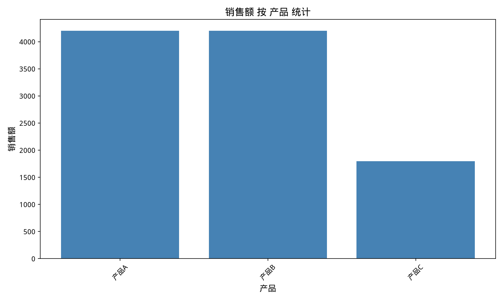
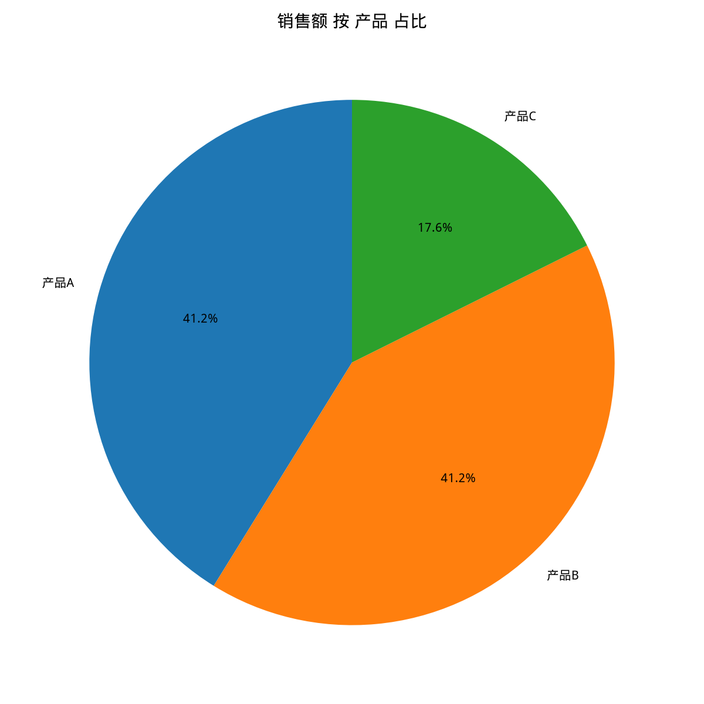

总行数:6,总列数:5,缺失值:4
| 产品 | 销售额 |
|---|---|
| 产品A | 4200 |
| 产品B | 4200 |
| 产品C | 1800 |


数据分析报告
一、数据整体情况概述
本报告基于一组包含6行5列的销售数据进行分析。数据中包含一个数值列“销售额”，用于衡量不同产品的销售情况。总体来看，数据集较为简单，但存在一定比例的缺失值。
二、关键发现
1. 缺失值分析
数据集中共有4个缺失值，占总行数的16.67%。这可能会对后续的分析结果产生影响，需要进一步调查缺失原因并考虑适当的处理方法。
2. 销售额分布分析
- 销售额的平均值为1700.00，表明整体销售水平处于中等水平。
- 标准差为419.52，说明销售额的波动性较大。
- 销售额的最低值为1000.00，最高值为2200.00，表明销售额存在一定范围的变化。
3. 产品销售额对比
- 产品A和产品B的销售额均为4200，说明这两个产品的销售表现较为稳定且表现良好。
- 产品C的销售额为1800，低于产品A和B，表明产品C的销售情况相对较弱。
三、趋势和规律分析
1. 销售额波动性
数据显示销售额的波动性较大，标准差为419.52。这可能受到市场环境、季节性因素或其他外部因素的影响。
2. 产品销售差异
产品A和产品B的销售额明显高于产品C，这可能与产品的市场定位、营销策略或市场需求有关。
3. 中位数与平均数差异
销售额的中位数为1750.00，而平均数为1700.00，这表明数据中存在一些极端值，使得平均数略低于中位数。
四、建议和改进方向
1. 缺失值处理
- 调查缺失值的原因，并根据具体情况采取适当的处理方法，如插值、删除或使用模型预测缺失值。
2. 销售策略优化
- 分析产品C销售较弱的原因，针对产品C制定相应的营销策略，以提高其销售额。
- 考虑对产品A和产品B的销售策略进行优化，以维持其良好的销售表现。
3. 数据质量提升
- 加强数据收集和管理，减少数据缺失和错误，提高数据质量。
- 定期对销售数据进行监控和分析，及时发现并解决问题。
通过以上分析和建议，有助于提升销售数据的分析效果，为企业的决策提供有力支持。